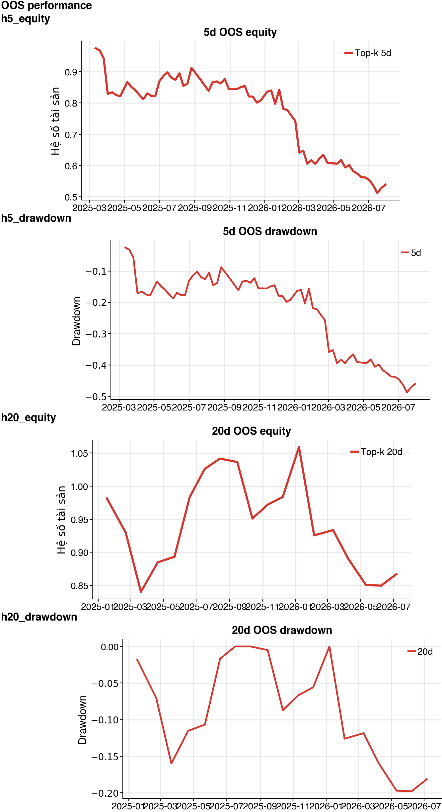

5 phiênNO_EDGERank IC 0.045 · HAC t 1.10 · Net -46.08% · Sharpe -1.69
20 phiênNO_EDGERank IC -0.018 · HAC t -0.33 · Net -13.30% · Sharpe -0.36
OOS performance

Ranking 5 phiên
Guard fail: rank_ic_hac_significance, positive_net_return, positive_sharpe
| Rank | Mã | Dự báo excess return | Percentile |
|---|---|---|---|
| 1 | VCB | 0.24% | 100.00% |
| 2 | FPT | 0.23% | 80.00% |
| 3 | HPG | 0.11% | 60.00% |
| 4 | MWG | 0.05% | 40.00% |
| 5 | VNM | -0.05% | 20.00% |
Kết quả theo market regime
| Regime | Net return | Sharpe | Rank IC |
|---|---|---|---|
| bear | -3.37% | -0.47 | 0.036 |
| bull | -14.71% | -1.36 | 0.076 |
| sideways | -34.58% | -2.51 | 0.014 |
Ranking 20 phiên
Guard fail: positive_rank_ic, rank_ic_hac_significance, positive_net_return, positive_sharpe
| Rank | Mã | Dự báo excess return | Percentile |
|---|---|---|---|
| 1 | VCB | 0.94% | 100.00% |
| 2 | HPG | 0.79% | 80.00% |
| 3 | FPT | 0.77% | 60.00% |
| 4 | VNM | 0.71% | 40.00% |
| 5 | MWG | -0.06% | 20.00% |
Kết quả theo market regime
| Regime | Net return | Sharpe | Rank IC |
|---|---|---|---|
| bear | -5.21% | -0.45 | -0.129 |
| bull | -3.25% | -0.19 | 0.016 |
| sideways | -5.46% | -0.40 | -0.007 |
Chỉ dùng cho nghiên cứu. NO_EDGE nghĩa là không đủ bằng chứng OOS sau chi phí. Universe cố định vẫn có survivorship bias; cần universe point-in-time và dữ liệu corporate action đáng tin cậy trước khi dùng ở production.